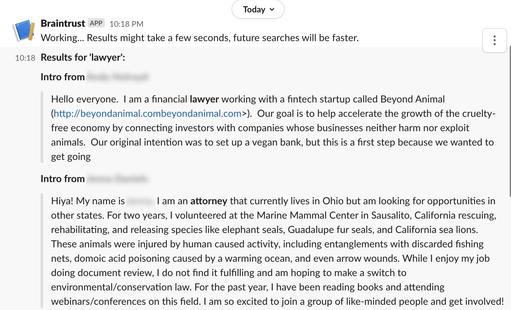

Hi!
My name's Brooke, and I'm a rising third-year computer science student at Georgia Tech, pursuing concentrations in people and devices, as well as a sustainable cities minor. I'm interested in learning more about full-stack development, UI/UX design, project management, and the intersections of sustainability and computing.
I am an active member of Veggie Jackets and Students Organizing for Sustainability/the Georgia Tech Community Garden, and I just finished my second semester as an undergraduate teaching assistant for discrete math in the College of Computing. I am also working on a Seismic Catalog Declustering project for the Extreme Events Engineering Vertically Integrated Project under Dr. Jorge Macedo.
Additionally, I'm currently working on a Slack bot for the Work on Climate Slack Workspace and doing some graphic and web design work for the Conversations with a Wannabe Scientist podcast.
Last summer, I remotely interned on the Custom Apps team doing UX and software engineering for Computer Enterprises, Inc. in Pittsburgh, PA. The following is a quote from Mike Pisino, the senior UX designer I worked with: “Her attention to detail was remarkable and her efficiency in doing both design and development were on par with some of the very best I have had the pleasure of working with over my career. Needless to say, I fully recommend and endorse Brooke to absolutely anyone in the software development industry. She is going to have an incredible career, one that I believe will be transformative to any company that is lucky enough to hire her.” (full recommendation can be found on my LinkedIn page)
This summer, I'm a software engineer intern at Viasat!
Click here to view my resume.
Experiences and Projects
-

Team Skills Matrix for Computer Enterprises, Inc. -

Braintrust Slack Bot -

Farm Game/Simulator -

TEDx Talk -

Conscious Swipes -

Plant-based Diet Guest Blog Post - Completed PluralSight Courses
- Conversations with a Wannabe Scientist
- Undergraduate Teaching Assistant for Discrete Math
Skills
- Java
- Python
- C
- LC-3 Assembly
- Angular, TypeScript, JavaScript, HTML, and CSS
- JavaFX
- Dart and Flutter
- VSCode, IntelliJ, Android Studio, and Sublime
- Azure DevOps/Repos and GitHub
- Figma and Adobe XD
- Spanish (Avant Stamps certified Advanced Low)
Relevant Coursework
- Object-Oriented Programming
- Data Structures and Algorithms
- Linear Algebra
- Discrete Math
- Multivariable Calculus
- Objects and Design
- Computer Organization and Programming
- Teaching Assistant Training
- Statistics and Applications
- Design and Analysis of Algorithms
- Sustainable Urban Development
- Land Conservation
- Psychology Research Methods
- Extreme Events Engineering Vertically Integrated Project (Spring and Fall 2021)
- Systems and Networks (Fall 2021)
- Applied Combinatorics (Fall 2021)
- Sustainable Cities Studio (Fall 2021)
- Urban Transportation (Fall 2021)
Honors
- Faculty Honors: Fall 2019, Spring 2020, Fall 2020, and Spring 2021